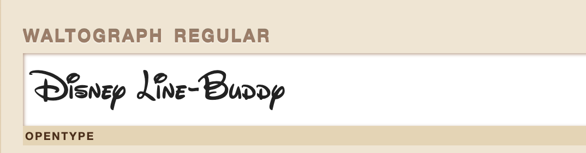
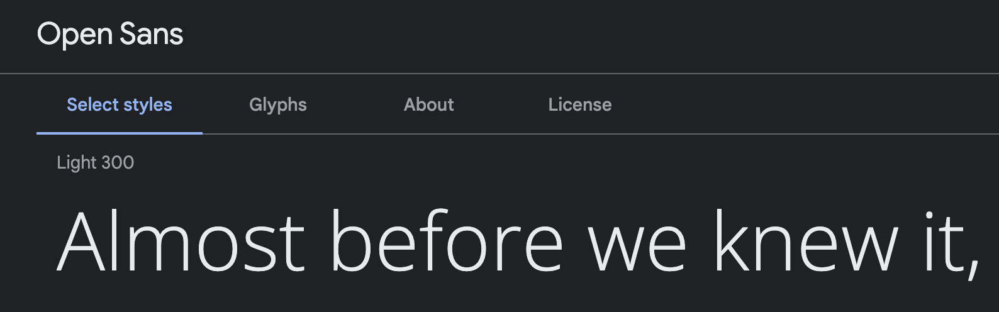

Font 1
Specialized Font: Waltograph

< link rel="stylesheet"
media="screen"
href="https://fontlibrary.org
//face/waltograph"
type="text/css"/>
p {
font-family: 'WaltographRegular';
font-weight: normal;
font-style: normal;
}
Other fonts and icons
Font 2
Paragraph Font: Open Sans

font-family: 'Open Sans', sans-serif;
< link rel="preconnect" href="https://fonts.googleapis.com"> < link rel="preconnect" href="https://fonts.gstatic.com" crossorigin> < link href="https://fonts.googleapis.com /css2?family=Open+Sans:wght@300&display=swap" rel="stylesheet">